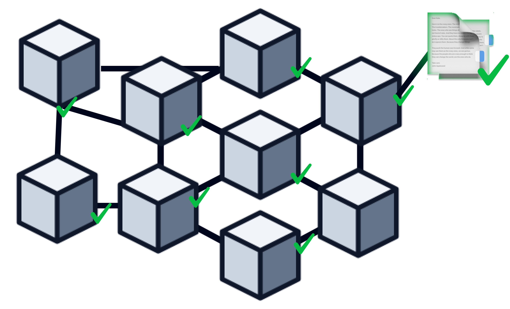
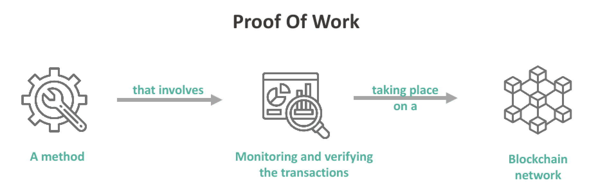

Aplicaciones actuales del Blockchain
Hoy en día se utiliza la blockchain en el ámbito de las Criptomonedas, Contratos inteligentes, Identidad digital, etc...
Hoy en día se utiliza la blockchain en el ámbito de las Criptomonedas, Contratos inteligentes, Identidad digital, etc...
Un usuario inicia una transacci√≥n enviando una cantidad de criptomonedas a otro usuario. incluyendo las direcciones de las billeteras (walletsüí∞) del remitente y destinatario, y cantidad.
La transacción es transmitida a una red de nodos (computadoras) distribuidos por todo el mundo. Cada nodo contiene una copia de la blockchain y participa en la validación de las transacciones.
Los nodos verifican la autenticidad de la transacción. Para ello, se aseguran de que Juan tenga suficientes Bitcoins para realizar la transferencia y que no esté intentando gastar la misma cantidad dos veces (problema de doble gasto).
Una vez verificada, la transacción se agrupa con otras transacciones recientes en un bloque. Este bloque aún no está confirmado.
Los nodos compiten para resolver un complejo problema matemático. El primer nodo en resolver el problema añade el nuevo bloque a la blockchain y recibe una recompensa en criptomonedas (minería⛏️).
Una vez resuelto el problema, el nuevo bloque se añade a la cadena de bloques existente. Todas las copias de la blockchain en la red se actualizan para incluir el nuevo bloque.
La transacción está ahora confirmada y registrada en la blockchain. El destinatario (María) puede ver que ha recibido los Bitcoins, y el saldo de la billetera del remitente (Juan) se actualiza.